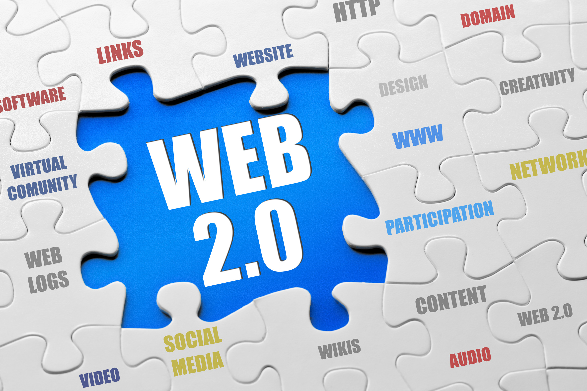

Historia del Internet
El Internet tiene sus raíces en las telecomunicaciones, comenzando con el telégrafo a finales del siglo XIX y en el desarrollo de las primeras computadoras durante la Segunda Guerra Mundial, creadas principalmente con fines bélicos. A mediados del siglo XX surgieron las primeras ideas sobre redes de comunicación, dando origen a conceptos de redes computarizadas.
En 1962, Joseph Carl Robnett Licklider, del MIT, propuso la idea de una “Red Galáctica”, un sistema que permitiría la interconexión social a través de computadoras. En las décadas de 1950 y 1960 ya existían redes modestas para reservas aéreas y control militar. La incorporación de tecnología de semiconductores permitió que las grandes computadoras pudieran atender a varios usuarios simultáneamente, lo que llevó a la creación de conceptos como computadores “huéspedes” y servidores.

En 1969 nació ARPANET, un proyecto del Departamento de Defensa de EE.UU., que conectaba universidades y fue dirigido por Licklider. Para que distintas computadoras se comunicaran, se desarrollaron protocolos comunes. En 1973, ARPANET comenzó a intercambiar información con otras redes internacionales, y en 1982 se establecieron los protocolos TCP/IP, base fundamental para la comunicación en Internet.
Durante los años 80, Internet creció y se abrió lentamente al mundo comercial. ARPANET evolucionó hasta su cierre a comienzos de los 90, cuando fue reemplazada por NSFNET, una red de científicos y universidades que sentó las bases del Internet actual, con más de 100,000 servidores en 1990.
El término “Internet” se popularizó en los 90, como acrónimo de redes interconectadas. La World Wide Web fue creada por Tim Berners-Lee y Robert Cailliau en el CERN, para facilitar el acceso y recuperación de la enorme cantidad de información en Internet mediante documentos enlazados y navegadores web, como Mosaic en 1993, que hicieron posible la difusión masiva del uso de Internet.
Etapas del desarrollo de Internet
- Los inicios (1940-1989):
Internet surge como una red militar y científica para garantizar comunicaciones sin un centro de control único, usando líneas telefónicas y desarrollando protocolos como TCP/IP. El software de código abierto fomentó la colaboración.
- La expansión (1990-1999):
El acceso masivo se facilita con la entrada de empresas privadas, el crecimiento de sitios web y el inicio de la Web 2.0. Aparecen blogs y se generan grandes cantidades de datos, naciendo el concepto de big data, con sus desafíos en sesgos y poder.
- Red colaborativa e interactiva (2000-2009):
La Web 2.0 permite que usuarios sin conocimientos técnicos generen y compartan contenido en plataformas como Wikipedia, Facebook y YouTube. Se popularizan los servicios en la nube y la banda ancha, junto con dispositivos móviles que amplían el acceso.
 - Monetización y derechos (2010-2019):
Internet se convierte en un espacio dominado por plataformas comerciales. Surgen las criptomonedas como Bitcoin, y el análisis de datos personales crece con fines publicitarios y de inteligencia artificial. Aparecen debates sobre privacidad, seguridad y uso crítico del ciberespacio. Se reconoce el acceso a Internet como un derecho humano, y en Argentina se impulsan programas para expandir la conectividad y la soberanía tecnológica.
- IA generativa, pandemia y ambiente (2020-2024):
La pandemia de Covid-19 acelera el trabajo y la vida social en línea. La inteligencia artificial, especialmente la IA generativa, revoluciona la creación de contenido pero también genera preocupaciones sobre ética, privacidad y consumo energético.